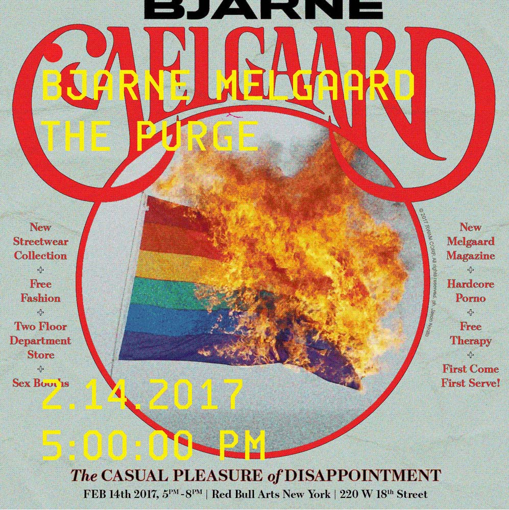

Produced in collaboration with creative director Babak Radboy, the exhibition featured a presentation of the eponymous menswear/unisex clothing line, The Casual Pleasure of Disappointment, which violently embraces the obsessive and self-destructive aspects of fashion and consumerism.

Promotional poster for 'The Purge' event.
Above images credit: Installation view, The Casual Pleasure of Disappointment, 2017. Photography by Lance Brewster.

Installation view, The Casual Pleasure of Disappointment, 2017. Photography by Andre Herrero.
ARTIST BOOK
The Casual Pleasure of Disappointment (2017)
Radboy designed a magazine the size of a vinyl LP. Taking the form of a boxed set, each project is individually bound within. Published in an edition of 150, contributors include Miguel Adrover, Burke Battelle, Alissa Bennett, Asger Carlsen, Vincent Dilio, Anders Edström, Hedi El Kholti, Roe Ethridge, Jason Farrer, Jamil GS, Andy Harman, Steven Klein, Marcelo Krasilcic, Chris Kraus, Rob Kulisek, Mathieu Malouf, Wolfe Margolies, Sacha Maric, Paul McGinnis, Bjarne Melgaard, Jason Nocito, ORFI, Heji Shin, Akeem Smith and Brendan Stumpf.
The magazine's cover featuring the LGBQT flag makes reference to the politics of Bash Back, a network of queer anarchists who formed the organization in 2007 as a response to the US government's assimilationst initiatives and the ideology of the mainstream LGBQT movement. Bash Back's mission was to dismantle the sanctity of hegemonic institutions, including the corporate coöption of liberation symbolism and speech.
COLLABORATORS
Artist: Bjarne Melgaard
Creative Director: Babak Radboy
Stylist: Avena Gallagher
Producer: Spencer Morgan Taylor @ Harbinger Creative
Additional Production, Kate Hawkins @ Andorforever
Art Director: Erin Knutson
Architects: Charlap Hyman & Herrero
Sets: Amy Henry
Managing Editor: Candice Strongwater
Chief Curator: Max Wolf
Designers: Aimee Bowen & Junlu Xie
Product Management: Don Hearn
Accounting: Tim Smith